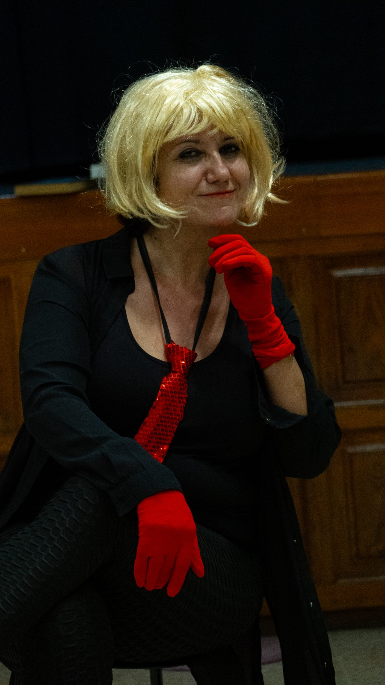

Directivo

Nicoletta Cristina Pennati
Presidenta(Biografía a completar)

Walter Christina Sainz Rozas Schmitz
Secretario(Biografía a completar)

Encarna Alemán Ramirez
TesoreraEncarna Alemán, nacida en Las Palmas de Gran Canaria, vive en Telde. Cursó estudios superiores y se formó en inglés y francés en la EOI. Su primera interpretación fue a los 10 años en el colegio, en la obra La piedra que quiso volar. Ese fue el punto de partida para continuar con su vocación de actriz de teatro.
Desde 2021 recibe clases de interpretación con directores como Salvador Quesada, Cándido de Armas o Laura Cristini y ha participado en teatro y cortos como Inmaculadas, Varados, Estamos locos o qué…, en la representación callejera de Juan Tenorio. Ha actuado en ¡Buen Camino!, La Librería de las almas. Ha participado en el concurso «Duólogo» organizado por El Aparte con: ¡Ay, mamá!, Nosotras y luego… él.
Continúa formándose y preparándose tanto a nivel teatral con Cristina Yu, como audiovisual en Zenit Visual Studio.

Ruth Plata León
VocalRuth Plata León, nacida en Las Palmas de Gran Canaria, vive en Santa Brígida. Se inició como locutora de radio, lo que la llevó a formarse como actriz de doblaje, poniendo voz a documentales, anuncios y presentaciones.
Ha estudiado interpretación con Victoria Teijeiro y Fernando Soto, y ha participado en numerosos cursos de interpretación ante cámara con profesionales del sector. Ha actuado en varios cortometrajes de producción canaria y en obras de teatro.
Las últimas, por la dirección de Rosa Escrig, son Polígono (Premio Réplica para el mejor espectáculo 2025), Con siete estrellas verdes y ¡Buen Camino! en piezas de microteatro. Ha participado en el concurso «Duólogo» organizado por El Aparte con: Bernarda no hay más que una; Ni contigo ni sin mí; Sin cobertura. Es docente en artes escénicas.

Ángela De Prisco
VocalÁngela De Prisco. Soy actriz de teatro. El escenario es mi casa desde hace más de veinte años. Me formé en arte dramático y en arte-terapia expresiva, pero lo que realmente me ha enseñado este oficio ha sido el público: su silencio, su risa, su respiración compartida.
He trabajado tanto el repertorio clásico como la comedia y el cabaret, porque me interesa el ser humano en todas sus formas: trágico, ridículo, frágil, exagerado. Me gusta moverme entre la intensidad y la ironía, entre la palabra y el cuerpo.
En el monólogo encuentro un espacio muy personal: ahí estoy sola, sin esconderme, dialogando directamente con quien me mira. Me interesa un teatro vivo, honesto, que no solo entretenga, sino que cree conexión. Para mí, actuar no es fingir. Es estar presente.

Belinda Hernández García
VocalBelinda Hernández García, nacida en Fuerteventura, vive en Gran Canaria. Estudió la carrera de Turismo en Gran Canaria, donde ejerce actualmente como guía oficial y de montaña, tras su periplo por el extranjero. Su amor por el teatro se hizo evidente al escribir, dirigir y protagonizar una obra, con la participación de sus compañeros de clase, para celebrar su décimo cumpleaños. Seis años después, formó parte de la compañía del Instituto, cuyo mayor éxito fue un programa humorístico semanal para la radio.
Ha actuado en ¡Buen Camino!. Le interesan la aventura, el deporte y el senderismo, la fotografía, los bailes latinos, viajar, la recitación, las risas y las fiestas.